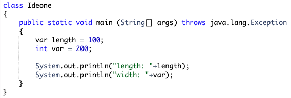

FIB: Java is a _________ language.
What is meant by the statement, "Java is a strongly typed language"?
What is the use of data types?
How many types of data are supported by Java?
How are the 8 data types in Java classified under different categories?
What aspect of Java is not object oriented?
Is there a data type in Java that represents only +ve whole numbers or only -ve whole numbers?
What is the size and range of each Integer data type in Java?
Which is the most rarely used Integer data type in Java?
Why is it generally not recommended to use byte and short data types when dealing with integer values OR what is the disadvantage of using byte or short data type in java?
Explain with example, the disadvantage of using byte and short data type?
Will the following statement work considering byte values are automatically promoted to int when used in expression?
byte b = 10;
What is the size and range of floating point numbers in java?
What are the 2 ways in which floating point numbers can be represented in memory?
FIB: Java uses _________ to represent characters.
What is the size and range of char data type in Java?
What is something important to know about UNICODE character set?
What are the 2 important character sets that are part of the UNICODE character set? Also mention there range?
What are the UNICODE values for:-
1. Digits 0 to 9
2. Capital A to Capital Z
3. Small A to Small Z
Give an interesting characteristic of char data type in Java?
Explain the characteristic of char data type with an example?
Will the following statements compile:-
1. char ch1 = ch + 32;
2. char ch1 = ch2 + ch3;
Will the following statement work:-
char ch = 'A';
ch++;
Give an interesting characteristic of boolean variable?
What are literals?
What is the way of representing a:-
1. byte literal
2. short literal
3. int literal
4. long literal
How are numbers represented in java in:-
1. Binary representation (Base 2)
2. Octal representation (Base 8)
3. Decimal representation (Base 10)
4. Hexadecimal representation (Base 16)
Give an important characteristic of integer literal?
What is the use of having underscore in integer literals?
Can underscores be used with binary, octal and hexadecimal representations as well?
What are the 2 ways in which floating point literals can be represented?
What is the way of representing a:-
1. Float literal
2. Double literal
FIB: An integer literal by default is ______ literal where as a floating point literal by default is a ________ literal.
Can floating point literals be represented in binary, octal and hexadecimal representation?
Can underscores be used with floating point literals?
What are the rules that should be kept in mind when using underscores with floating point literals?
What are the 2 boolean literals?
Give one important characteristic of boolean literals in Java?
Give an important characteristic of Character literals?
FIB: A character literal is represented within _________
How can we create a character literal for characters which cannot be typed directly via keyboard like pie symbol or which java syntax does not allow to use directly like single quote, double quote, enter key etc?
What are escape sequences?
What is meant by CARRIAGE RETURN and FORMFEED?
Why do we need escape sequences when we can already represent the characters represented by escape sequence (NEWLINE, BACKSPACE etc) using their corresponding octal/decimal/hexadecimal representation?
How are string literals represented?
Give an important characteristic of string literal?
In Java, String literals are
(i) Array of characters
(ii) Objects
What is meant by dynamic initialization of variables?
What is the difference between scope and lifetime of a variable?
FIB: __________ defines scope.
FIB: Java does not have ______ and _______ scope. Instead, it has _________ and _________ scope.
How are the scope and lifetime of variables linked?
What is automatic type conversion?
What is type casting?
What are the 2 conditions for automatic type conversion to take place?
What data types are considered compatible with each other?
Regarding the two conditions for automatic type conversion, which of the following statements are valid:
1. The rules/conditions are valid only when variable of one type is assigned to the variable of another type
2. The rules/conditions are valid only when literal of one type is assigned to the variable of another type
3. The rules/conditions are valid for both the above
What is the exception to the rules for automatic type conversion?
What happens when a variable is assigned a value outside the range of its data type?
What happens when the value of a variable goes beyond the range of its data type?
Is it possible that when variable/literal of one type is assigned to variable of another type, then the value of the source variable/literal gets changed?
What are the rules for type promotion in expressions?
What would be the result of the following expressions:-
(i) b = b * 2; //assuming byte b = 50;
(ii) s = s / 2; //assuming short s = 60;
(ii) ch = ch + 2; //assuming char ch = 'c';
What is an array?
FIB: An element in an array is accessed by ________
What is the syntax for declaring an array?
FIB: __________ is a special operator which is used for allocating memory in java.
What is the syntax for allocating memory to arrays?
What is the default value of each array element after the array has been allocated memory using the new operator?
What is the default value of the following:-
i) byte
ii) short
iii) int
iv) long
v) float
vi) double
vii) char
viii) boolean
ix) string (or any object)
Give an important property of default values?
WAP demonstrating default values of the following:-
i) byte
ii) short
iii) int
iv) long
v) float
vi) double
vii) char
viii) boolean
ix) string (or any object)
FIB: All arrays in Java are ____________
FIB: Index of all arrays in Java start at ___________
What is the syntax for combined declaration and allocation of arrays?
What is the syntax for initializing an array?
What is the alternate syntax for array declaration and when is this alternate syntax useful?
What is meant by type inference of variables?
How is a local variable declared such that type inference gets involved?
FIB: The type of the variable in case of local inference is determined by ___________
Consider the following declaration:-
var length = <literal>
What would be the type of local variable when the following literals are assigned to it:-
(i) 100
(ii) 100L
(iii) 100.23f
(iv) 100.23d
(v) 'c'
(vi) true
WAP to demonstrate the use of automatic type inference of local variable?
Will the following code:-

(i) Compile successfully
(ii) Execute successfully
Can 'var' keyword be used to declare the type of array? What is the rule when using 'var' with array declaration?
Automatic type inference cannot be used with which 3 things?
Can 'var' be used as type for references/objects? Explain with example.
What are the 5 restrictions on using 'var' for automatic type inference of local variables?
######
######
######